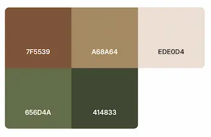

Website Plan
Site Name
"Taste of Mexico on your Table"
I chose this name because I like the idea of bringing the taste of Mexico to people's tables all around the world.
Site Purpose
I want anyone, anywhere in the world, to be able to see and have the opportunity to experience Mexican flavors. The site will also share the stories behind Mexican gastronomy and help visitors learn more about our rich culture.
Scenarios
• What are some easy traditional Mexican recipes I can try at home?
• Where can I learn about the history and origin of these Mexican dishes?
• Are the recipes suitable for people who don't have access to authentic Mexican ingredients?
Color Scheme
Typography
Roboto for text
Merriweather for headings